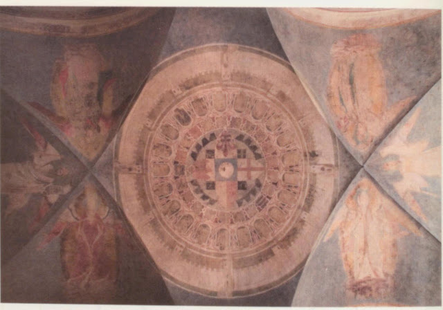
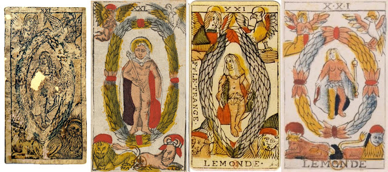
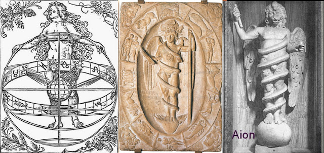
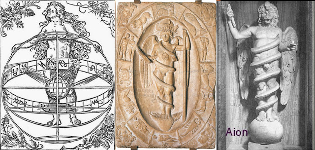
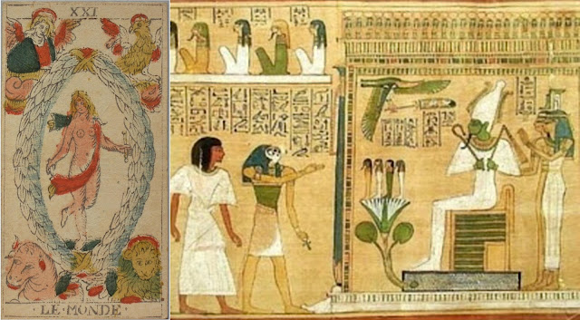
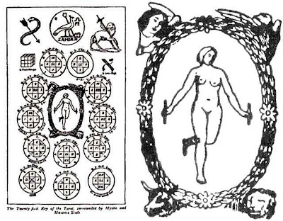
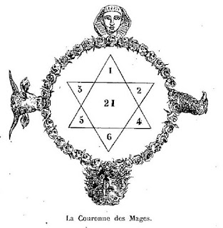
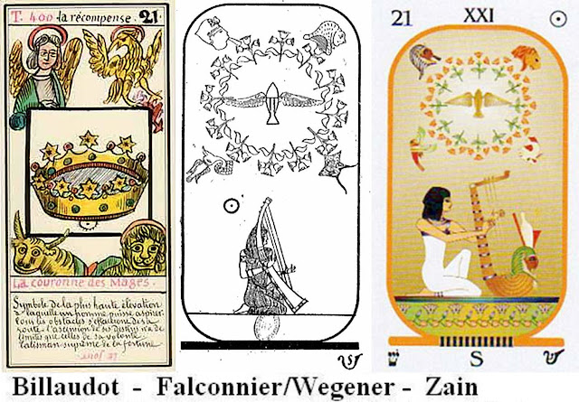
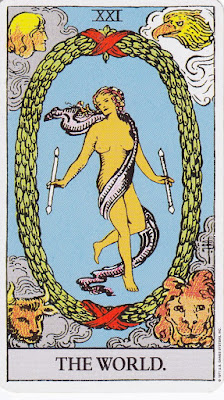
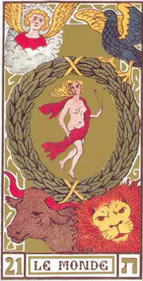

World
The World
The early cards
An anomaly about the World card is that in the early lists from Lombardy and the Ferrara region it is the highest triumph (trump), while in Florence and Bologna it is the second to the highest. Such reversals between adjacent cards is not uncommon between regions and even within one region, but in this case the meaning of the card may be affected, if the other is the Last Judgment, and that card signals precisely the end of this world and its replacement by the New Jerusalem. In that case the World card might refer to a world beyond the world of our current experience. On the other hand, if the Angel comes last, that might be interpreted as the New Jerusalem.
Some evidence that early on the Lombard cards was next to last is found in an account by Francesco Piscina, writing in nearby Piedmont in 1565. He has the card with a trumpeting angel last. He writes (trans. Caldwell, Depaulis and Ponzi, Explaining the Tarot, 2010, p. 25):
...the inventor...placed as last the image of Celestial Paradise, where blessed souls triumph. There he depicted an Angel that, singing and playing, rejoices in those that were made worthy of that most happy eternal rest firstly by the grace of God and by their own good deeds. ...This card is clearly that of the Judgment, even though he interprets it as after the judgment, in Paradise.
He considers that it is necessary to act well.in order to gain the glory of Paradise, as taught by the Holy Evangelists. So, before the image of Paradise, he made a portrait of these four Evengelists, intended and signified by the four symbols, Angel, Ox, Eagle, and Lion...That card of course is what we call the World, by 1565 having the four creatures in the corners of the card.
This tradition is confirmed in Piedmont practice even after the French-inspired cards that players used had the number 21 written on them: they still treated the card as 20th in actual play.

However we do not have to imagine the card with the Angel as Paradise in order to put the World card before it. The Visconti card of c. 1442 has a lady on top holding a long winged trumpet in one hand and a crown in the other. The trumpet is an attribute of Fame, by which one's deeds are trumpeted around the world, aided by the trumpet's wings. The crown suggests a possible reward for famous deeds, namely rulership of some sort, symbolic or otherwise. Below her a mounted knight stands beside a lake, in a scene reminiscent of a topographical map where towns are indicated by castles.
It has been speculated that this scene relates to an episode in the life of Francesco Sforza, in which this mercenary captain rescued the forces of another Visconti captain in which that captain escaped capture only by being hidden in a boat crossing a river.That the knight is Sforza is also suggested by other cards in the deck, notably the court cards in Batons and Swords, which contain Sforza heraldics,and the male on the Love and Chariot cards.Here we might recall that in Petrarch's I Trionfi, Love and Chastity were among the subjects, as were Fame and Eternity. The lady and the scene suggest Fame. The scene also has a mythic quality, in that the fisherman on the bank of the lake suggests the Fisher King of the Grail legend, and the knight Sir Parsifal, who alone among Arthur's knights was able to find the Grail Castle and thus win glory from that result.
\
These are all events before the Last Judgment. In contrast, the Sforza-era card features a city on an island surrounded by water, all above two cherubs below, who point to it. It is some sort of ideal or future existence, perhaps that of a future city in this world, but more likely the Heavenly Jerusalem of the Apocalypse. It could also be both, as though the future Milan would be a version of the ideal world to come. In fact the architect Filarete had proposed of such a city in his Sforzinda, a city of that name, below right (https://en.wikipedia.org/wiki/Sforzinda).
 In that sense it could also be the Grail Castle, as an ideal city, now
put beyond this World. Stuart Kaplan in his Encyclopedia of Tarot shows
an example, a similar island surrounded by water.
In that sense it could also be the Grail Castle, as an ideal city, now
put beyond this World. Stuart Kaplan in his Encyclopedia of Tarot shows
an example, a similar island surrounded by water.There is thus the possibility that the Visconti card was next to last in the sequence, the Sforza card, done 20 to 40 years later, reflects a later Lombard convention where it was the last card, in conformity with its position in the Ferrara region. There a list of triumphs sometime after around 1460 referred to the card as "El Mondo, cioe Dio, il Papa", "The world, that is, God the Father." From the extant Ferrarese cards it is hard to tell whether it is this world or the next that is meant. My best guess is that the printed card suggests that our world is in the hands of Divine Providence. Given that the cherub on the Este card suggests Cupid, that figure might represent God's love for the world. In that case the scene would be this world but from a divine perspective, allowing also for its transformation after the Last Judgment.

A Parisian card from the early 17th century seems to suggest again Divine Providence, personified as a woman holding a sail to direct the world, which was often represented as a circle divided into three and surmounted by a cross (which here is more like the bejeweled hilt of a sword).

 Although not a tarot card, the highest card of the "Tarot of Mantegna" (above
left) features a cosmograph, i.e. a map of the entire cosmos, seen as a
series of concentric circles. The label says "Prima Causa", First Cause,
i.e. God in Aristotelian language, who was the cause of it all. The
first version of that card had just the cosmograph. In the second
version, probably still in the 15th century, the four creatures were
added in the corners. They were the four beasts of the Apocalypse, but
also symbolic of the four evangelists and perhaps the four elements.
Whether they also represented four zodiacal signs is unclear, because
the eagle was not associated with Scorpio in this early period, at least
as documented. And while the bull would be associated with earth and
the lion with fire, the associations to the other two are not clear. The
evangelists themselves were associated with the four elements in
various ways.
Although not a tarot card, the highest card of the "Tarot of Mantegna" (above
left) features a cosmograph, i.e. a map of the entire cosmos, seen as a
series of concentric circles. The label says "Prima Causa", First Cause,
i.e. God in Aristotelian language, who was the cause of it all. The
first version of that card had just the cosmograph. In the second
version, probably still in the 15th century, the four creatures were
added in the corners. They were the four beasts of the Apocalypse, but
also symbolic of the four evangelists and perhaps the four elements.
Whether they also represented four zodiacal signs is unclear, because
the eagle was not associated with Scorpio in this early period, at least
as documented. And while the bull would be associated with earth and
the lion with fire, the associations to the other two are not clear. The
evangelists themselves were associated with the four elements in
various ways.An interesting description of the card is provided by Francesco Piscina, writing from Piedmont in 1565. I have already mentioned the four evangelists in the corners of the card (p 25).
Now the author has placed the image of the world in the middle of these four Holy Evangelists, in order to teach us that the world cannot be without religion, whose precept has been written by these Holy Evangelists.We may wonder just what the World card before him looked like. Reading "world" as "cosmos", it would seem to be something like the "Mantegna" image just shown above right. 
In the Middle Ages a city was sometimes represented as a series of concentric rings. Cities were in fact constructed with such defensive rings, but the implication is that the hand of providence has shaped the city as much as it has the cosmos. An example is a c. 1366 fresco on the ceiling of the former guildhall of Judges and Notaries in Florence. It is meant to be Florence, with its walls, gates, four quarters, sixteen districts, and twenty-one guilds, but also with intimations of the cosmos and the Heavenly Jerusalem. The city is surrounded by the four cardinal virtues in each corner, while on either side between virtues are civil and canon law.  At some point in the 16th century, either in Lombardy or France, a human figure in a mandorla replaced the globe in the middle of the card (above left). The figure seems almost deliberately androgynous, and later cards took it both ways, sometimes as male (Vieville, c. 1650 Paris), sometimes as female (Dodal 1708 Lyon), and sometimes as a male with breasts (Noblet c. 1660 Paris). The standard Marseille pattern had it as clearly female (Chosson, c. 1734m below left, Conver 1761 but printed c. 1860, center), although one late version gave it a masculine face (at right). This version was popularized by Paul Marteau starting around 1930 as the "ancient tarot of Marseille," although that particular face is no earlier than the late 19th century.
 
One inspiration might have been Durer's woodcut of Urania, muse of astronomy but also goddess of divine love, Aphrodite Urania now as the soul of the cosmos. "Mondo" in Italian is ambiguous in Italian between "universe" - meaning all the concentric circles of the medieval cosmos - and "the earth", which would be just the last one, earth surrounded by air and supporting water.
For the figure in the center of an ellipse holding two sticks, another influence could be a Roman-era Orphic medallion of bisexual Phanes, Greek for light-bearer, the child of Time and Necessity in Orphic mythology, who wind themselves around him in the cosmic egg (https://www.theoi.com/Protogenos/Phanes.html). There is also the lion-headed god Aion of Mithraism, of which some examples were known in Italy and France..The serpent then becomes the sash draped over the figure on the card. He is the cosmocrater, whose body divides into Heaven and Earth and then, at his hand, into all things. In the Wisdom literature of the Hebrew Bible, it is Wisdom, Sophia of its Greek translation, who makes all things well. In Christianity he corresponds to the Logos, by whom "all things were made", according to the Gospel of John. The figure's nudity merely accentuates its divine status, a property frequently given to gods as opposed to humans, as for example in Titian's famous painting, sometimes called Sacred and Profane Love, in which the human of the pairm allegedly the bride of the commissioner, is fully clothed.

De Gebelin, Etteilla, and the Occultists
In 1781 Antoine Court de Gebelin introduced the fashion of writing about hidden meanings in the cards, in his case showing to his satisfaction that the cards came from ancient Egypt. The four creatures now have an Egyptian interpretation, representing the four seasons of the year. He did not consider that Egypt, being so far south, might not have four seasons (in fact it has only three), or that the seasons might not have the same activities there as in his country. The birds return in the spring, hence the eagle. (Eagles were never used in Egyptian art, nor did birds return in the spring, although some may have come for the winter.) The summer is fiery hot (true enough), hence the Lion. The ox is for autumn plowing (fair enough, since it was after the annual flood). Winter was for gathering in society (actually there was harvesting and more planting to do; the big festivals were at the end of June, the beginning of the new year).
For the figure in the middle, he imposed his reading of the Orphic myth onto the card, even if Orphism is not Egyptian. She was the goddess of Time, and "goes around like Time, in a circle that represents the revolutions of time, thus the egg into which all is released into Time." He must have seen a drawing of the Orphic medallion. His recognition of the zodiac as an egg is not bad; and the figure is at least enclosed in Time and born of, if not into, Time, Kronos as Chronos, an ancient assimilation.
Gebelin's collaborator the Comte de Mellet repeated Gebelin's analysis, adding only that the goddess in the middle was Isis. Had he read Macrobius's Saturnalia, he might have repeated the latter's assertion that Isis is the world-soul. However an interpretation of her as Isis does not require much erudition. Indeed Isis, as can be seen in papyrus illustrations, stood behind the throne of judgment to welcome the virtuous into the afterlife.

 Etteilla said of this card in his 2nd Cahier:
Etteilla said of this card in his 2nd Cahier:No. 5. The fifth sheet bears the number 6 for its day of creation: God made Man in his image, being then, in regard to human physicality, in perfection; it bears for its Element the number 4, “Earth.”Accordingly both numbers are on the card. The card has the usual woman and creatures, but with the addition of pyramids in the oval, apparently to show the card's authenticity. They are in the Greek style, much higher than they are wide. Etteilla must not have known what the famous pyramids of Egypt looked like.
The upright keyword is "Voyage", which must have been suggested by the word "World", which Etteilla in the 3rd Cahier retains as the title for the card. The association perhaps goes back as far as the type of card that showed hills and towns, like a map. But how does "World" relate to the 6th day of creation, given that the world was already created before then. I think the answer might be in what he says about the number 2 in the 1st Cahier, namely:
The Creator formed Adam, male & female; and separated this number so that he could extend to the number 3, generation. After the number 3 comes necessarily 4, the universe, which we also find in the microcosmic number 2In other words, in creating Adam and Eve, the creator has created a world in miniature, called the microcosm in Hermetic lore.

This interpretation is echoed by Eliphas Levi in what he says about the card. Giving it the number Tau, the last letter of the Hebrew alphabet, he says (Doctrine and Ritual of High Magic, Greer and Mikituk trans., p. 400):
The microcosm; the summary of everything in everything.The human figure is the microcosm of everything else, just as Kether contains everything else in the sefiroth within itself, as its source. In his drawing of the card, in a later work, the crown was replaced by a series of 12 circles with a cross inside them n and just showed the woman, at last unveiled for our gratification.
Hieroglyph. Kether, or the Cabalistic:crown, between four mysterious animals; in the middle of the crown, we see Truth holding a magic wand in each hand.
In another part of his book, Chapter 22 of Book I, he says of the card (p. 185):
This universal arcanum, the final and eternal secret of high initiation, is symbolized in the Tarot by a naked young girl who touches the earth with onl one foot and holds a magnetized wand in each hand, and seems to be running in a crown held up by an angel, an eagle, a bull and a lion. The figure is basically analogous to the cherub of Yehesqiel [Jekeskiel in original], whose drawing we provide, as the Indian symbol of Ardhanari [Addhanari in original], analogue of the Ado-nai of Yehesqiel, who is vulgarly called Ezekiel.

Greer and Mikituk provide no drawing here, but in the origina (online in Gallica), between pp. 366 and 367, there appears a Hindu-like drawing, where three animals can be identified (an ox, a tiger, and a lion or bear on the dress) as well as objects resembling the four suit-objects. A similar drawing is in Kaplan's Encyclopedia of Tarot, vol. 1, p. 19 (1978), with a couple of differences. Most importantly, the breast on the right side is less pronounced, suggesting androgyny; Kaplan describes it s a union of Shiva with his "wife of many names" (p. 18). Another difference is that the objects are not quite the same: the "scepter" might be a trident, and the "cup" is probably a drum. These differences do not seem to be important: it is only the resemblance that matters.

Levi's follower Paul Christian and those who created cards from his
writings took the crown but could not fit the woman inside it. Christian
does not mention it, For him it is a garland of golden roses inside of
which is a star and on which are the heads of an ox, lion, eagle, and
man. It is the only one of the 22 that he actually provided a drawing
for. At this stage the initiate has attained a power limited only by his
own intelligence and wisdom (trans. pp. 110-112).Remember, son of earth, the empire of the World belongs to the empire of Light, which is the throne reserved by God for sanctified Will. Happiness for the Magus is the fruit of the knowledge of Good and Evil; but God only allows it to be plucked by the man sufficiently master of himself to approach it without covetousness.The "Recompense" that is the key word is made clear in his summary (trans. p. 112):
All will that unites itself to God in order to demonstrate Truth and operate Justice enters, after this life, into participation with the divine Omnipotence over beings and things, the Eternal Reward [XXI] of enfranchised spirits.Billaudaut, in the 1860s, decided upon a literal crown, with no room for the young woman Truth, but with Christian's title "Recompense". By the time of Falconnier, 1895, real images of Egyptian women were available. So she could be portrayed playing an Egyptian stringed instrument, with roses even if the four creatures above her seem Egyptianate fantasy. Instead of the woman there is a kind of flying torpedo: I do not recognize the symbol. The colored version, with golden roses, is from the Brotherhood of Light, founded by C. C. Zain, with a somewhat more fanciful instrument. The Brotherhood's Hebrew letter departs from Levi so as to give the last letter to the Fool.

For Papus in Tarot of the Bohemians the card has meaning on three levels. First is the Absolute, which is to say God, whose name is spelled out by the four animals, each standing for a different letter of YHVH. They also relate to the four suits, in the order Scepters, Cups, Coins, Swords, and the four elements, in the order fire, water, earth, air. Second is Nature, the Universe, which is also the body of the Absolute. Third is the soul of the Absolute, that is, humanity in the form of Adam-Eve, represented by the figure inside the ellipse.
A.E. Waite says of this card:
It represents also the perfection and end of the Cosmos, the secret which is within it, the rapture of the universe when it understands itself in God. It is further the state of the soul in the consciousness of Divine Vision, reflected from the self-knowing spirit. ...Amplifying on "perfection and end of the Cosmos" he adds:
It has more than one message on the macrocosmic side and is, for example, the state of the restored world when the law of manifestation shall have been carried to the highest degree of natural perfection. But it is perhaps more especially a story of the past, referring to that day when all was declared to be good, when the morning stars sang together and all the Sons of God shouted for joy.Other than that, he finds ridiculous Christian's interpretation of the card as "the Magus at the highest state of initiation" and Papus's that it is "the absolute." As for Levi, Waite says that Truth more properly applies to the 17th arcanum.

For Oswald Wirth, the four creatures are the four elements, the four
evangelists, and four bright stars, each in one of four cardinal points:
the Bull's eye, the Lion's heart, the Eagle's light and the southern
Fish which absorbs the watercarrier's water. From this astronomical
perspective the Eagle corresponds to air, the man to water, the Bull to
earth, and the Lion to fire. In Wirth's card, the two wands are both in one hand, the left. He explains that the red tip of one picks up fiery energy from the universe, which would go out but for the blue tip, which picks up air. It then goes through her body and is transmitted to the red sash by her left hand. For him her dancing represents the state of the universe, in constant change. Yet to the wise man the world is unitary, "the One Thing of the Hermetists." He adds,
By conceiving the radical Unity or oneness of what exists, we rise to Gnosis, the supreme reward for one who searches for the true.Another reward is the "unlimited power" that comes with the "universal knowledge", "the realization of the ideal of skilled adept."

A unique feature of Case's card is that the figure in the middle, whom he calls the World-Dancer and the Celestial Androgyne, holds spirals rather than wands. One turns to the right and the other to the left, so that they balance. They represent integration and disintegration, he says. The spiral, and in particular something called "the logarithmic spiral" is the basic form of the universe, Case says, "the form of all forms". He gives spiral nebulae as an example. What suggests the masculine in Case's dancer, he says, is the relatively stronger legs. The face to me looks rather feminine, as opposed to that of Paul Marteau's card and also of a version of Case's card done by someone else, which I put to the right of Case's.
The result for Case a state of power as well as knowledge:
The goal of the Great Work isto know the Self, but to know, as we mean it here, is not merely to witness, not merely t« be aware of something external, as when we say we "know” the various phenomena of our environment. The knowledge which completes the Great Work is identification with the Central Reality of the universe, and such knowledge is really the acme of practical power.Thus the claims of the alchemists about the Philosopher's Stone are literally true for one who knows this "central reality", the means "for preserving their youth, expelling disease, preventing suffering, and providing themselves with all they require. Success in the Great Work so unites the personal self with the ONE IDENTITY that every detail of the personal existence is a conscious expression of the ALL POWER."
Jungian Interpretations
.Jung of course uses similar language as Case, to similar points. While having a feminine face, hair, and breasts her slender hips and sturdy legs suggest that her body combines masculine and feminine. In fact to me the Paul Marteau figure's face, unlike that of the standard Tarot of Marseille, has a masculine face (see the three TdM cards above). This of course goes back to the earliest version with a partially nude figure in the middle, as we have seen. For Nichols it is the unity and interplay of opposites. "The flowing scarf representThe two wands play a similar role, one negative and the other positive, in constant but also changing relationship to each other as she dances. She is not just running but dancing within the elliptical space.
What the dance does is to unite the immediate feeling of being in the world with the universal and transcendent:
Dance originated as a sacred act, a form of prayer, by which man put himself in tune with all nature and with the gods. Through rhythmic dance, man bridged the gap between between mortal time and transcendental time and experienced himself as part of an ever-changing process. Through ritual dance, the shaman put himself in tune with the universe to restore the equilibrium of nature so that he could call forth needed rain or effect healings. Through ecstatic dance, the dervish leaped outside mortal time, matching his rhythm to the whirling stars.Other cards depict a kind of dance, especially the Hanged Man. But:
Unlike the Hanged Man, who enacted the topsy-turvy jig of Fate's puppet, thedancer moves freely with one foot always touching the earth. Although she is in constant motion, she remains connected with the ground of her being.- golden and indestructible.She quotes Maria von Franz:
The experience of the Self brings a feeling of standing on solid ground inside oneself, on a patch of inner eternity which even physical death cannot touch.Nichols emphasizes the connection to what both Jung and Case call the Self. Speaking of the dancer, she says, "In Jungian terms, she might symbolize the self, center of psychic wholeness." Not only that, but:
The self is the center of our psychic equilibrium. When we lose touch with the dancer within, we lose our equilibrium.Whenever we lose touch with nature - our inner nature - we experience, deep down, a sense of inferiority. To be in contact with the natural self, deep down, is to feel neither inferior nor superior.Jung points out that the level of the Self goes beyond the personal and into the collective;
We can now see that the unconscious produces contents which are valid not only for the person concerned, but for others as well, in fact, for a great many people and possibly for all.
Not only that, but:
The deeper "layers" of the psyche lose their individual uniqueness as they retreat further and further into darkness. "Lower down" - that is to say, , as they approach the autonomous functional systems - they become increasingly collective until they are universalized and extinguished in the body's materiality, i.e. in the chemical bodies. The body's carbon is simply carbon. Hence at bottom the psyche is simply "world."We may recall here the Neoplatonic concept of the anima mundi, the soul of the world. In alchemy it was seen as a force embedded in matter that animated all bodies from the stars to the animals, plants, and elements on earth." At the same time the Self expresses the collective in an individual way. Nichols quotes Jung: "The individual alone makes history." The individual is thus "that infinitesimal unit upon whom the world depends, and on whom, if we read the meaning of the Christian message right, even God seeks his goal." In that regard he says that Christ is a symbol of the Self, as the embodied divine..Thus the Celestial Jerusalem seen on one early card is replaced by the dancer, an individual in human form.
This world, while consisting of the dance of particles and waves with only a tendency to exist, as studied by subatomic physics, is nonetheless for Jung more than the play of appearnces. What remains is the "psychoid layer of being" where two ways of being were reconciled.
The common background of microphysics and depth psychology is as much physical as pysychic, and therefore neither, but rather a third thing, a neutral nature which can at most be grasped in hints since in essence it is transcendental.It is the "unus mundus" of the mystics, of which he says "there is little or no hope that the unitary Being can ever be conceived, since our powers of thought and language permit only of antinomian statements.
The dancer is enclosed in a wreath. This is the temenos, the sacred enclosure in which along it is free to express itself, like the safe setting of the therapy room. In a similar way, she observes Christ and the Virgin Mary were traditionally put in such enclosures.She quotes Walt Whitman:
I am an acme of things accomplishedThere is a nice interplay of opposites here: things accomplished are for the most part visible to all, things to be are not. We both are and are not, so an interplay of opposites.This is another feature of the Self, and of the divine; all opposites are of God, Jung says. By taking on this burden, God incarnates himself within one.
And I am an enclosure of things to be.
We come to the four creatures, symbols of the four evangelists, witnesses to the incarnation of the divine and guides toward our own connection to the divine. On another level they are the building blocks of the cosmos, the four elements out of which all things were said to derive. They, too, contain opposites: hot vs. cold, dry vs. wet. The dancer is in this regard the quintessence, which is somehow beyond the opposites, yet connected with them.
Exactly which creature stands for which element is a matter of dispute. Wirth identified the eagle with air and the man, as the water-carrier, with water. But the Anglo-American tradition has it the other way around, as Aquarius is an air sign and the eagle is somehow identified with Scorpio, which also corresponds to where the sign would have to be on the zodiacal circle, given the placement of the other three. It is clear that the animals originally had to do with Ezekiel, a product of Babylonian-influenced culture. Perhaps indeed the scorpion of later times substituted for the eagle of earlier times. In any case the four creatures play a dual role, as evangelists leading us outside the cosmos and as elements leading us into the cosmos. .
An aspect of the four creatures that Nichols does not pursue is their relationship to the four suits and the four Jungian functions. Here again it does not matter how it is done. If so, the animals again form a pair of pairs, rational vs. irrational, which again divide into opposites, thinking vs. feeling and sensation vs. intuition. Their unity is in one way the card itself, whose meaning can be thought about, felt, observed, and intuited: the four functions in the corners suggest the fifth in the center, who in shifting from side to side and up and down holds all four in her movement. In another respect the dancer might represent a fifth function that Jung called the transcendent function, that which unites the conscious with the unconscious. It is a dialogue in which opposing viewpoints are juxtaposed, interact in "active imagination", until finally an equilibrium is reached.
Here I am reminded of a text, surely corresponding to a tradition, in which on the Mount of Olives before Jesus is arrested, he sings a hymn to prepare the disciples for what is to come, to which the disciples dance in a circle.. The hymn proclaims that "To each and all it is given to dance" (also translated as "the whole on high is a dance", where the heavenly beings dance in time with the disciples). Through the dance one may both embrace suffering and transcend it: "If thou understoodest suffering, thou wouldst have nonsuffering."(or, "know how to suffer and thou wilt have nonsuffering"). It is translated in various places, one of which is by Max Pulver, in The Mysteries: Papers from the Eranos Yearbooks, edited by Joseph Campbel and translated by Ralph Mannheim. It reminds Pulver of another song, or poem, by the German mystic Mechthild of Magdeburg (c.1207-c.1282), an unusual account of the Virgin. Between the 15th and late 19th century this text was relatively unknown; but it fits. Mechthield imagines the Lord saying to her (pp. 175-176):
Maiden, dance as deftly before me as my elect has danced before thee.And the Virgin replies:
I would not dance, Lord, unless thou leadest me.Then we are in the realm of the divine Fool, as the God beyond number and concepts, a return to the divine source.
Wouldst thou that I spring mightily,
Then must thou sing for me.
Thus will I leap into love,
From love into knowledge,
From knowledge into joy,
From joy beyond all human senses.